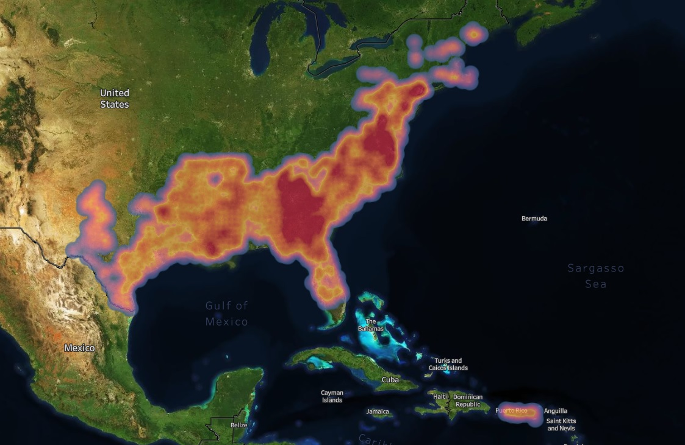

Tropical Storms in the USA
In this project, the goal is to create presentable visualisations showing the frequency and damage caused by tropical storms in the USA. From this we can then look in to the following questions, which are very important for the region;
Does global warming increase the frequency of tropical storms on the East Coast of the USA?
Have they become more damaging with global warming?
Approach
The data was sourced from NOAA in the form of CSVs. Python was then utilised for compilation and cleaning to form a dataset that could be used in Tableau. From there the compiled dataset was then explored and compared to related data found from other sources.
An issue was found during the exploratory stage, that there were many "storm events" for individual large scale storms. This was frustrating when trying to find statistics for individual Hurricanes especially, and eventually had to be worked around.
Result
The data loaded into the notebook was then shaped to fit in Tableau. The goal was to create visualisations to be exported into a presentation format.
As for the original questions about storms, with the data and extra external research the conclusions were;
- There was no evidence that storms were becomming more frequent with global warming.
- The potential intensity of storms were increasing though, and one of the main factors for this is the rise in average temperature of the sea surface in the Atlantic Basin.
Shown below is a heatmap of reported storm events related to Tropical Storms (of which Hurricanes are the most intense type) in the USA.
External Links
To view the visuals for this project, please click the link below!